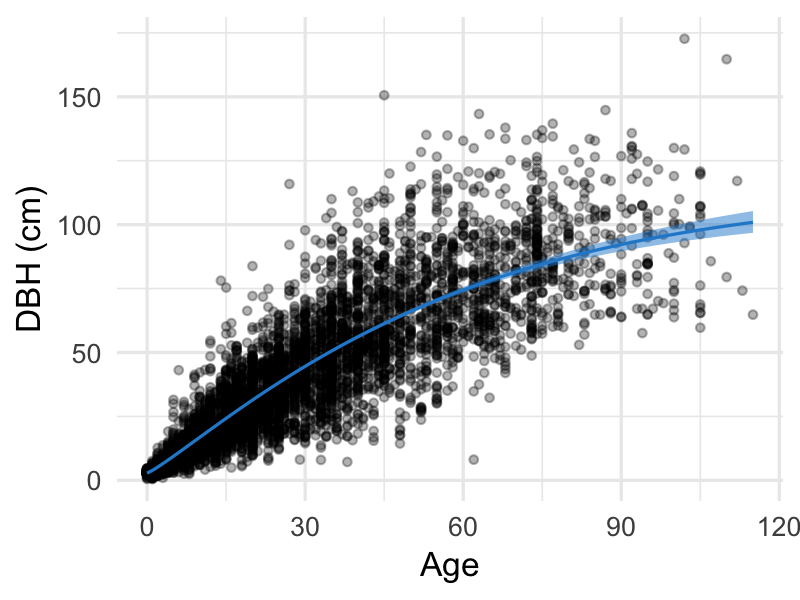

Biometry Project
Bayesian Nonlinear Multilevel Modeling of Urban Tree Growth
Tedward Erker
December 3, 2018
Forest ≠ Urban
Open Grown ≠ Urban
Growth of urban trees?
Existing Approach

Model Considerations
Model Considerations
- Biologically realistic
- Variance increases with age
- Share information across groups
(Cities, Genera, Species)
Model Considerations
- Biologically realistic
- Variance increases with age
- Share information across groups
(Cities, Genera, Species)
Weibull
\(\mu_i = 1 - \exp(-\color{red}{\beta^{(2)}}x_i^{\color{red}{\beta^{(3)}}})\)
Weibull
\(\mu_i = \color{red}{\beta^{(1)}} \{1 - \exp(-\beta^{(2)}x_i^{\beta^{(3)}})\}\)
Weibull
\(\mu_i = \color{red}{\beta^{(0)}} + \beta^{(1)} \{1 - \exp(-\beta^{(2)}x_i^{\beta^{(3)}})\}\)
Y ~ Normal
\(\mu_i = \beta^{(0)} + \beta^{(1)} \{1 - \exp(-\beta^{(2)}x_i^{\beta^{(3)}})\}\)
\(y_i \sim \mbox{Normal}(\mu_i, \sigma)\)
Y ~ Gamma
\(\mu_i = \beta^{(0)} + \beta^{(1)} \{1 - \exp(-\beta^{(2)}x_i^{\beta^{(3)}})\}\)
\(y_i \sim \mbox{Gamma}(\mu_i, \alpha)\)
Pooling

complete pooling
Multilevel Modeling
Multilevel Modeling
\(y_{i\color{red}{gsc}} \sim \mbox{Gamma}(\mu_{i\color{red}{gsc}}, \alpha_y)\)
\(\mu_{i\color{red}{gsc}} = \beta^{(0)}_{\color{red}{gsc}} + \beta^{(1)}_{\color{red}{gs}} \{1 - \exp(-\beta^{(2)}_{\color{red}{gsc}} x_{i\color{red}{gsc}}^{\beta^{(3)}_{\color{red}{gsc}}})\}\)
Multilevel Modeling
\(\mu_{igsc} = \color{red}{\beta^{(0)}_{gsc}} + \beta^{(1)}_{gs} \{1 - \exp(-\color{red}{\beta^{(2)}_{gsc}} x_{igsc}^{\beta^{(3)}_{gsc}})\}\)
For \(\beta^{(j)}_{igsc}\), j = 0,2,
\(\beta^{(j)}_{igsc} = \beta^{(j)}_0 + \gamma^{(j)}_{gs}+\delta^{(j)}_{c}\)
Multilevel Modeling
\(\mu_{igsc} = \beta^{(0)}_{gsc} + \color{red}{\beta^{(1)}_{gs}} \{1 - \exp(-\beta^{(2)}_{gsc} x_{igsc}^{\beta^{(3)}_{gsc}})\}\)
For \(\beta^{(1)}_{igs}\),
\(\beta^{(1)}_{igs} = \beta^{(1)}_0 + \gamma^{(1)}_{gs}\)
Multilevel Modeling
\(\mu_{igsc} = \beta^{(0)}_{gsc} + \beta^{(1)}_{gs} \{1 - \exp(-\beta^{(2)}_{gsc} x_{igsc}^{\color{red}{\beta^{(3)}_{gsc}}})\}\)
For \(\beta^{(3)}_{igsc}\),
Multilevel Modeling
\(\gamma^{(j)}_{gs} \sim N(\gamma^{(j)}_{g}, \sigma^{(j)}_{genus:species})\)
\(\gamma^{(j)}_{g} \sim N(0, \sigma^{(j)}_{genus})\)
\(\delta^{(j)}_{c} \sim N(0, \sigma^{(j)}_{city})\)
Priors
\(\beta^{(j)}_0 \sim \mbox{Gamma}\)
\(\sigma^{(j)}_{group} \sim \mbox{half-Normal}\)
\(\alpha_y \sim \mbox{Gamma}\)
Model Fitting
brms

Stan
brms
DBH ~ beta0 + beta1 * (1 - exp(-beta2 * AGE^beta3)) beta0 ~ (1 | City) + (1 | Genus/Species) beta1 ~ (1 | Genus/Species) beta2 ~ (1 | City) + (1 | Genus/Species) beta3 ~ precip * gdd + (1 | City) + (1 | Genus/Species)
and some lines to specify priors
Stan Code
// generated with brms 2.4.3 functions { } data { int<lower=1> N; // total number of observations vector[N] Y; // response variable int<lower=1> K_b0; // number of population-level effects matrix[N, K_b0] X_b0; // population-level design matrix int<lower=1> K_b1; // number of population-level effects matrix[N, K_b1] X_b1; // population-level design matrix int<lower=1> K_b2; // number of population-level effects matrix[N, K_b2] X_b2; // population-level design matrix int<lower=1> K_b3; // number of population-level effects matrix[N, K_b3] X_b3; // population-level design matrix // covariate vectors vector[N] C_1; // data for group-level effects of ID 1 int<lower=1> J_1[N]; int<lower=1> N_1; int<lower=1> M_1; vector[N] Z_1_b0_1; // data for group-level effects of ID 2 int<lower=1> J_2[N]; int<lower=1> N_2; int<lower=1> M_2; vector[N] Z_2_b0_1; // data for group-level effects of ID 3 int<lower=1> J_3[N]; int<lower=1> N_3; int<lower=1> M_3; vector[N] Z_3_b0_1; // data for group-level effects of ID 4 int<lower=1> J_4[N]; int<lower=1> N_4; int<lower=1> M_4; vector[N] Z_4_b1_1; // data for group-level effects of ID 5 int<lower=1> J_5[N]; int<lower=1> N_5; int<lower=1> M_5; vector[N] Z_5_b1_1; // data for group-level effects of ID 6 int<lower=1> J_6[N]; int<lower=1> N_6; int<lower=1> M_6; vector[N] Z_6_b2_1; // data for group-level effects of ID 7 int<lower=1> J_7[N]; int<lower=1> N_7; int<lower=1> M_7; vector[N] Z_7_b2_1; // data for group-level effects of ID 8 int<lower=1> J_8[N]; int<lower=1> N_8; int<lower=1> M_8; vector[N] Z_8_b2_1; // data for group-level effects of ID 9 int<lower=1> J_9[N]; int<lower=1> N_9; int<lower=1> M_9; vector[N] Z_9_b3_1; // data for group-level effects of ID 10 int<lower=1> J_10[N]; int<lower=1> N_10; int<lower=1> M_10; vector[N] Z_10_b3_1; // data for group-level effects of ID 11 int<lower=1> J_11[N]; int<lower=1> N_11; int<lower=1> M_11; vector[N] Z_11_b3_1; int prior_only; // should the likelihood be ignored? } transformed data { }
parameters { vector<lower=0>[K_b0] b_b0; // population-level effects vector<lower=0>[K_b1] b_b1; // population-level effects vector<lower=0>[K_b2] b_b2; // population-level effects vector<lower=0>[K_b3] b_b3; // population-level effects real<lower=0> shape; // shape parameter vector<lower=0>[M_1] sd_1; // group-level standard deviations vector[N_1] z_1[M_1]; // unscaled group-level effects vector<lower=0>[M_2] sd_2; // group-level standard deviations vector[N_2] z_2[M_2]; // unscaled group-level effects vector<lower=0>[M_3] sd_3; // group-level standard deviations vector[N_3] z_3[M_3]; // unscaled group-level effects vector<lower=0>[M_4] sd_4; // group-level standard deviations vector[N_4] z_4[M_4]; // unscaled group-level effects vector<lower=0>[M_5] sd_5; // group-level standard deviations vector[N_5] z_5[M_5]; // unscaled group-level effects vector<lower=0>[M_6] sd_6; // group-level standard deviations vector[N_6] z_6[M_6]; // unscaled group-level effects vector<lower=0>[M_7] sd_7; // group-level standard deviations vector[N_7] z_7[M_7]; // unscaled group-level effects vector<lower=0>[M_8] sd_8; // group-level standard deviations vector[N_8] z_8[M_8]; // unscaled group-level effects vector<lower=0>[M_9] sd_9; // group-level standard deviations vector[N_9] z_9[M_9]; // unscaled group-level effects vector<lower=0>[M_10] sd_10; // group-level standard deviations vector[N_10] z_10[M_10]; // unscaled group-level effects vector<lower=0>[M_11] sd_11; // group-level standard deviations vector[N_11] z_11[M_11]; // unscaled group-level effects } transformed parameters { // group-level effects vector[N_1] r_1_b0_1 = sd_1[1] * (z_1[1]); // group-level effects vector[N_2] r_2_b0_1 = sd_2[1] * (z_2[1]); // group-level effects vector[N_3] r_3_b0_1 = sd_3[1] * (z_3[1]); // group-level effects vector[N_4] r_4_b1_1 = sd_4[1] * (z_4[1]); // group-level effects vector[N_5] r_5_b1_1 = sd_5[1] * (z_5[1]); // group-level effects vector[N_6] r_6_b2_1 = sd_6[1] * (z_6[1]); // group-level effects vector[N_7] r_7_b2_1 = sd_7[1] * (z_7[1]); // group-level effects vector[N_8] r_8_b2_1 = sd_8[1] * (z_8[1]); // group-level effects vector[N_9] r_9_b3_1 = sd_9[1] * (z_9[1]); // group-level effects vector[N_10] r_10_b3_1 = sd_10[1] * (z_10[1]); // group-level effects vector[N_11] r_11_b3_1 = sd_11[1] * (z_11[1]); }
model { vector[N] nlp_b0 = X_b0 * b_b0; vector[N] nlp_b1 = X_b1 * b_b1; vector[N] nlp_b2 = X_b2 * b_b2; vector[N] nlp_b3 = X_b3 * b_b3; vector[N] mu; for (n in 1:N) { nlp_b0[n] += r_1_b0_1[J_1[n]] * Z_1_b0_1[n] + r_2_b0_1[J_2[n]] * Z_2_b0_1[n] + r_3_b0_1[J_3[n]] * Z_3_b0_1[n]; nlp_b1[n] += r_4_b1_1[J_4[n]] * Z_4_b1_1[n] + r_5_b1_1[J_5[n]] * Z_5_b1_1[n]; nlp_b2[n] += r_6_b2_1[J_6[n]] * Z_6_b2_1[n] + r_7_b2_1[J_7[n]] * Z_7_b2_1[n] + r_8_b2_1[J_8[n]] * Z_8_b2_1[n]; nlp_b3[n] += r_9_b3_1[J_9[n]] * Z_9_b3_1[n] + r_10_b3_1[J_10[n]] * Z_10_b3_1[n] + r_11_b3_1[J_11[n]] * Z_11_b3_1[n]; // compute non-linear predictor mu[n] = shape / (nlp_b0[n] + 100 * nlp_b1[n] * (1 - exp( - (nlp_b2[n] / 100) * C_1[n] ^ (nlp_b3[n])))); } // priors including all constants target += gamma_lpdf(b_b0 | 9, 3) - 1 * gamma_lccdf(0 | 9, 3); target += gamma_lpdf(b_b1 | 34, 19.4) - 1 * gamma_lccdf(0 | 34, 19.4); target += gamma_lpdf(b_b2 | 69.4, 55.5) - 1 * gamma_lccdf(0 | 69.4, 55.5); target += gamma_lpdf(b_b3[1] | 16, 26) - 1 * gamma_lccdf(0 | 16, 26); target += normal_lpdf(b_b3[2] | 0.01, 0.01) - 1 * normal_lccdf(0 | 0.01, 0.01); target += normal_lpdf(b_b3[3] | 0.01, 0.015) - 1 * normal_lccdf(0 | 0.01, 0.015); target += normal_lpdf(b_b3[4] | 0.005, 0.005) - 1 * normal_lccdf(0 | 0.005, 0.005); target += gamma_lpdf(shape | 20, 1); target += normal_lpdf(sd_1 | 0, 0.3) - 1 * normal_lccdf(0 | 0, 0.3); target += normal_lpdf(z_1[1] | 0, 1); target += normal_lpdf(sd_2 | 0, 0.4) - 1 * normal_lccdf(0 | 0, 0.4); target += normal_lpdf(z_2[1] | 0, 1); target += normal_lpdf(sd_3 | 0, 0.1) - 1 * normal_lccdf(0 | 0, 0.1); target += normal_lpdf(z_3[1] | 0, 1); target += normal_lpdf(sd_4 | 0.1, 0.4) - 1 * normal_lccdf(0 | 0.1, 0.4); target += normal_lpdf(z_4[1] | 0, 1); target += normal_lpdf(sd_5 | 0, 0.1) - 1 * normal_lccdf(0 | 0, 0.1); target += normal_lpdf(z_5[1] | 0, 1); target += normal_lpdf(sd_6 | 0, 0.1) - 1 * normal_lccdf(0 | 0, 0.1); target += normal_lpdf(z_6[1] | 0, 1); target += normal_lpdf(sd_7 | 0, 0.1) - 1 * normal_lccdf(0 | 0, 0.1); target += normal_lpdf(z_7[1] | 0, 1); target += normal_lpdf(sd_8 | 0, 0.05) - 1 * normal_lccdf(0 | 0, 0.05); target += normal_lpdf(z_8[1] | 0, 1); target += normal_lpdf(sd_9 | 0, 0.1) - 1 * normal_lccdf(0 | 0, 0.1); target += normal_lpdf(z_9[1] | 0, 1); target += normal_lpdf(sd_10 | 0, 0.1) - 1 * normal_lccdf(0 | 0, 0.1); target += normal_lpdf(z_10[1] | 0, 1); target += normal_lpdf(sd_11 | 0, 0.05) - 1 * normal_lccdf(0 | 0, 0.05); target += normal_lpdf(z_11[1] | 0, 1); // likelihood including all constants if (!prior_only) { target += gamma_lpdf(Y | shape, mu); } } generated quantities { }
Sampling the Posterior
Metropolis-Hastings
No-U-Turn Sampler (NUTS)
MCMC diagnostics
check
Results
Comparison
Genus and City Variability
\(\sigma^{(0)}_{genus} < \sigma^{(0)}_{city}\)
\(\sigma^{(2)}_{genus} \approx \sigma^{(2)}_{city}\)
\(\sigma^{(3)}_{genus} \approx \sigma^{(3)}_{city}\)
Genus

City

Climate
Climate
Uncertainty
Limitations
age extrapolation
Yoshino Cherry
Minneapolis, MN
other limitations
- no repeat measures
- missing less common species
- no mortality estimates
Extensions
- Individual level predictors
- Genus and Species level predictors (traits)
- Age as random variable
- Height and crown width as joint responses
- More taxonomic levels (or phylogentic distance GP)